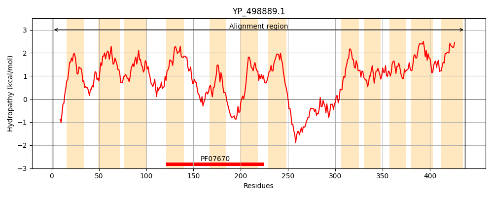
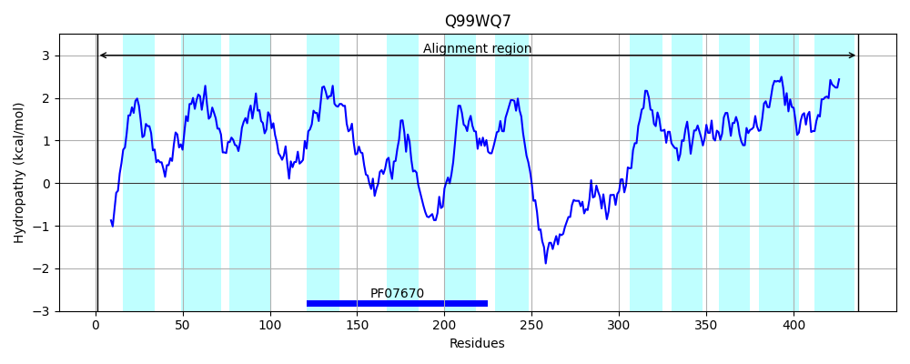
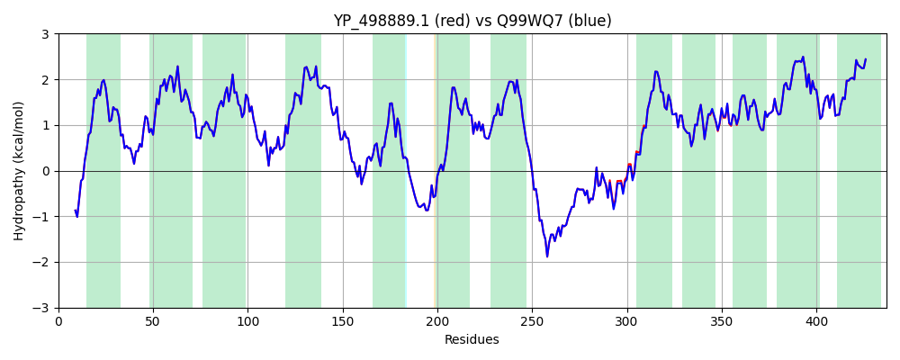

Hit Accession: Q99WQ7
Hit TCID: 9.A.5.2.2
Hit Description: gnl|BL_ORD_ID|17682 gnl|TC-DB|Q99WQ7|9.A.5.2.2 Putative uncharacterized protein OS=Staphylococcus aureus (strain Mu50 / ATCC 700699) GN=SAV0319 PE=4 SV=1
Mach Len: 437
e:0.000000
Query TMS Count : 12
Hit TMS Count: 12
TMS-Overlap Score: 12.500000
Predicted Substrates:CHEBI:5733;histidine
BLAST Alignment:
Score: 2199 , Bit scores: 851 bits, E-value: 0.0e+00, Alignment length: 437, Percentage identity: 99
Query: 1 MNQYHSNAQQPSAWRFFVYSLVGILCFFIPFTINGNNTIFVDHVHLAIRSIIGPLMPYVALIMILIGTALPIVRRTFMTSITNLVITLFKVAGAMIGIMYVFKIGPSILFKANYGPFLFEKLMMPLSILIPVGAIALSLLVGYGLLEFVGVYMEPIMRPIFKTPGKSAVDAVASFVGSYSLGLLITNRVYKQGMYNKREATIIATGFSTVSATFMIIVAKTLGLMPHWNLYFWITLVITFVVTAITAWLPPISNESTEYYNGQEGEQEVAIEGSRLKTAYAEAMKQNALTPSLVKNVWDNLKDGLEMTVGILPSILSIGFLGLIVANYTPFIDWLGYIFYPFIYIFPIADQALLAKASAISIVEMFLPSLLVTKAAMSTKFVVGVVSVSAIIFFSALVPCILATEIKIPVWKLIIIWFLRVALSLLITIPVALLIFG 437
MNQYHSNAQQPSAWRFFVYSLVGILCFFIPFTINGNNTIFVDHVHLAIRSIIGPLMPYVALIMILIGTALPIVRRTFMTSITNLVITLFKVAGAMIGIMYVFKIGPSILFKANYGPFLFEKLMMPLSILIPVGAIALSLLVGYGLLEFVGVYMEPIMRPIFKTPGKSAVDAVASFVGSYSLGLLITNRVYKQGMYNKREATIIATGFSTVSATFMIIVAKTLGLMPHWNLYFWITLVITFVVTAITAWLPPI+NESTEYYNGQEGEQEVAIEGSRLKTAYAEAMKQNALTPSLVKNVWDN KDGLEMTVGILPSILSIGFLGLIVANYTPFIDWLGYIFYPFIYIFPIADQA+LAKASAISIVEMFLPSLLVTKAAMSTKFVVGVVSVSAIIFFSALVPCILATEIKIPVWKLIIIWFLRVALSLLITIPVALLIFG
Sbjct: 1 MNQYHSNAQQPSAWRFFVYSLVGILCFFIPFTINGNNTIFVDHVHLAIRSIIGPLMPYVALIMILIGTALPIVRRTFMTSITNLVITLFKVAGAMIGIMYVFKIGPSILFKANYGPFLFEKLMMPLSILIPVGAIALSLLVGYGLLEFVGVYMEPIMRPIFKTPGKSAVDAVASFVGSYSLGLLITNRVYKQGMYNKREATIIATGFSTVSATFMIIVAKTLGLMPHWNLYFWITLVITFVVTAITAWLPPITNESTEYYNGQEGEQEVAIEGSRLKTAYAEAMKQNALTPSLVKNVWDNFKDGLEMTVGILPSILSIGFLGLIVANYTPFIDWLGYIFYPFIYIFPIADQAVLAKASAISIVEMFLPSLLVTKAAMSTKFVVGVVSVSAIIFFSALVPCILATEIKIPVWKLIIIWFLRVALSLLITIPVALLIFG 437 | Protein Hydropathy Plots: |
|---|
|  |  |
Pairwise Alignment-Hydropathy Plot:
|
|---|
|  |